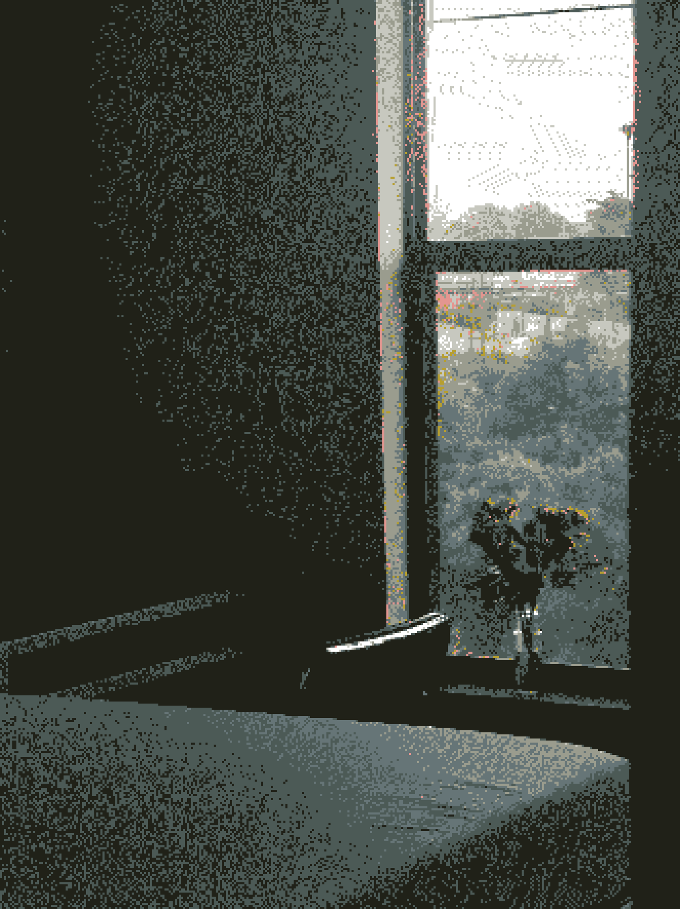
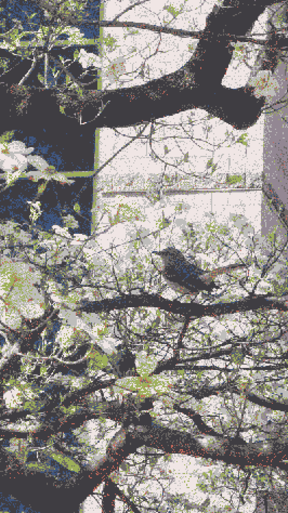

在红雀还未苏醒
车前草沉睡在灰色的寒冷中时
知更鸟蓬松着羽毛
日复一日地
将地面啄出一个又一个
毫无生机的陷落空洞时
在云层重叠着相拥
替我眺望彼岸时
Before the cardinal has stirred awake,
when plantain dormant
in an unyielding winter grayness;
When American robin with feathers fluffed,
pecks the earth into lifeless, sinking voids
day after days, hollow after hollow;
When the clouds, layer into each others flesh,
gaze across the distant shore for me;
让我们牵着手
谈论无意义的虚妄想象
等待浓烈的色彩
顺着瞳孔淌进大脑的刹那
我们就拥抱着
顺从地
让寂静的结尾没收我们的生命
好吗?
let us hold hands,
and speak of futile, drifting, imaginary, meaningless nonsense
As we wait for a rush of color
to spill through the pupils
and flood the brain
then we embrace,
and without resistance,
letting the quiet ending
confiscate our lives.
Will you?